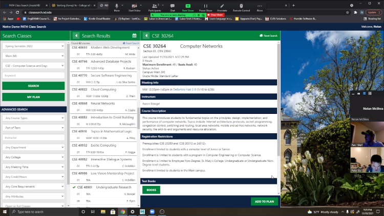

This week’s meeting took the form of a livestream on our Twitch channel. Registration for Spring 2022 is fast approaching, so President Nolan, Vice President Paul, and Advisor Professor Bui led a discussion of the CSE Department’s course offerings for the upcoming semester.
Of particular interest were the elective courses, which include “Computer Graphics”, “Hardware for Learning,” and “Open Source Software Development.” Current undergrads, graduate students, and alumni kept the Twitch chat busy with questions, comments, and recommendations. I’m sure this stream will be of great use to anyone unsure of what to take next semester. Because this blog post’s author is not a CSE major, that’s about all the detail I can give you. Go watch the stream yourself to find out more.
